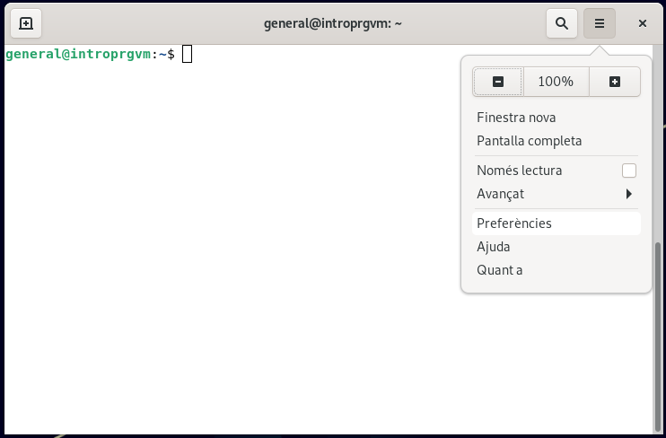
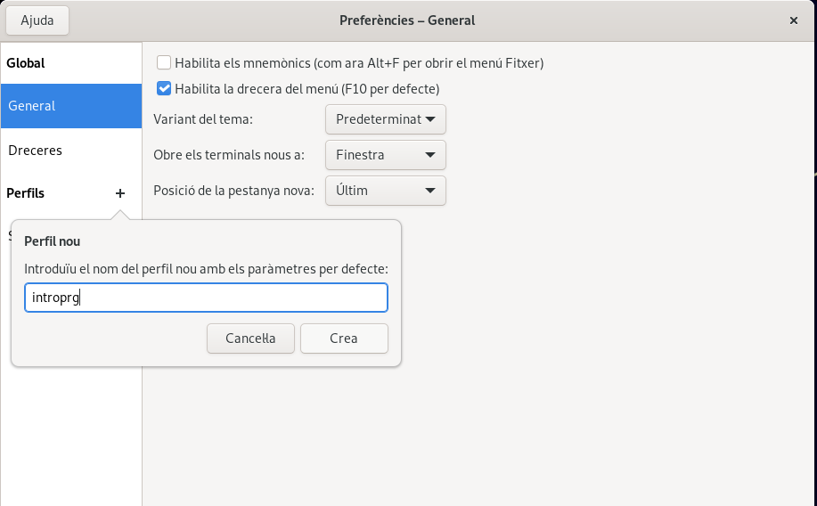
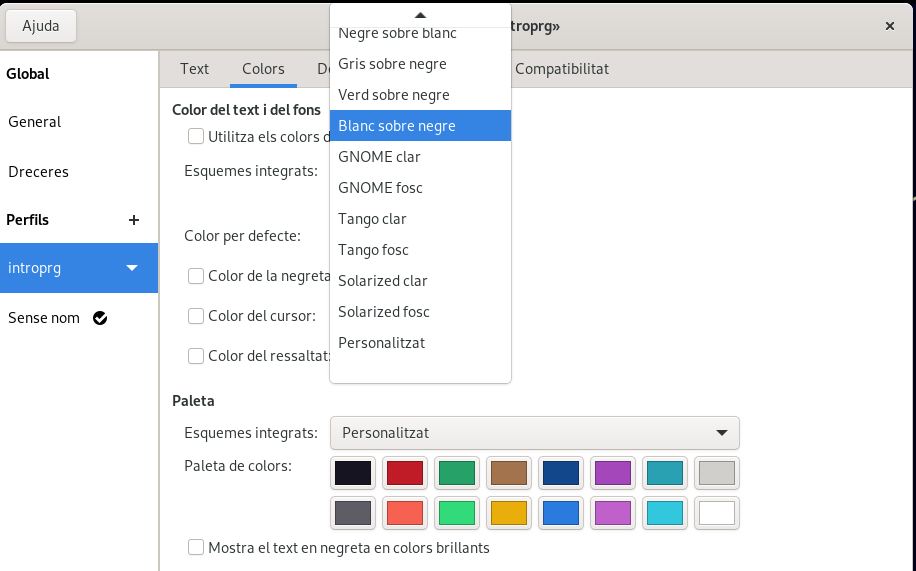
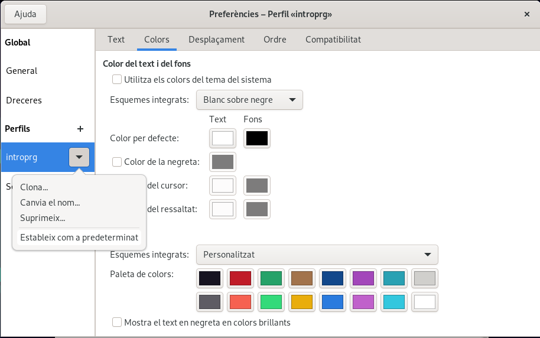

Configuració de l'entorn
Important
Aquesta secció no la podràs realitzar fins que jo no t'hagi donat d'alta al sistema de correcció automàtica, i hagi actualitzat el teu repositori remot. Paciència
General
Perquè el sistema de proves de l'assignatura pugui funcionar al teu equip, cal instaŀlar i configurar alguns elements.
He preparat un petit programet que farà part d'aquesta configuració per tu.
Un cop el teu repositori hagi estat reconegut pel sistema de proves, al teu GitHub disposaràs d'uns nous fitxers de suport. Els pots descarregar fent:
$ cd ~/introprg
$ git pull
Entre els diferents elements que tindràs descarregats al teu equip, un
d'ells és el programa configura_introprg.sh.
Executa la següent comanda:
$ bash .introprg/configura_introprg.sh
És possible que la primera vegada que l'executis, el teu sistema et demani el password del teu usuari.
Un cop finalitzada l'execució de configura_introprg.sh podràs
comprovar si tot està bé escrivint:
$ source ~/.bashrc
$ prgtest
ERROR: El directori actual no es troba dins del directori de treball
Malgrat surt un error, és la resposta que esperàvem. El programa de
validació prgtest s'ha executat correctament i t'està avisant que no
et trobes dins d'una carpeta que reconegui com a exercici. Genial!
L'error que no voldríem és el següent:
$ prgtest
-bash: prgtes: command not found
Si t'ha resposta això després d'haver executat configura_introprg.sh i
source ~/.bashrc, demana ajuda.
Terminal amb fons negre
És probable que vegis millor la sortida de prgtest amb el terminal amb fons negre.
Segurament els teus ulls t'ho agrairan i a més, semblaràs més pro ;)
Per canviar-ho, pots obrir un terminal i anar al menú de preferències:
Ara crees un nou perfil:
Deselecciones perquè no faci servir els colors del sistema i esculls blanc sobre negre:
Experimenta i quedat la que més t'agradi.
Un cop ja ho tinguis, tanca la finestreta de preferències, cal marcar aquest perfil com a predeterminat:
A partir d'ara els nous terminals que obris ja tindran aquesta configuració.